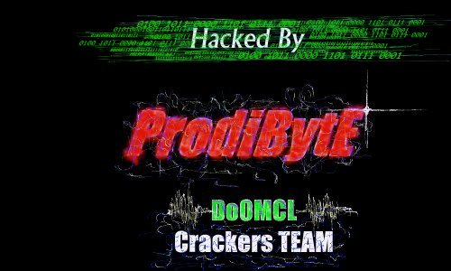

En Nombre del Pueblo Chileno, Disculpas aceptadas Dr_Fdisk !!!!!
Errar es humano pero lo dificil es reconocer los errores y tu has demostrado tu capacidad de comprender y asumir .
Dejemos este altercado en el pasado y trabajemos por todos los hermanos de latinoamerica.A Al administrador de este dominio le ruego mil disculpas pero todo sera retribuido indicando cual es el problema del server. Tan simple como cerrar el puerto netbios. 135,13, y este es el importante 139
